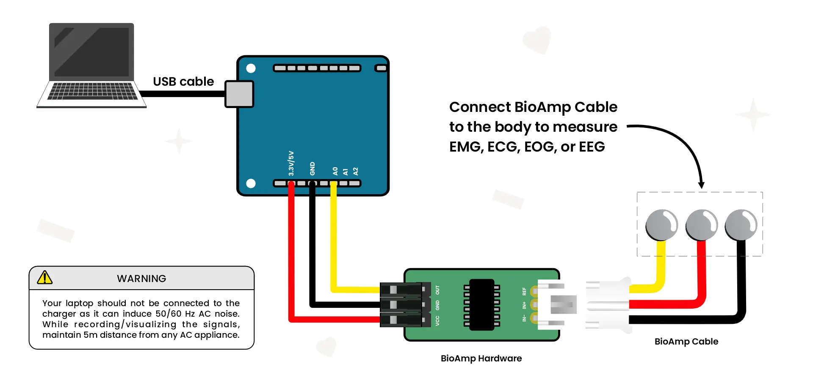
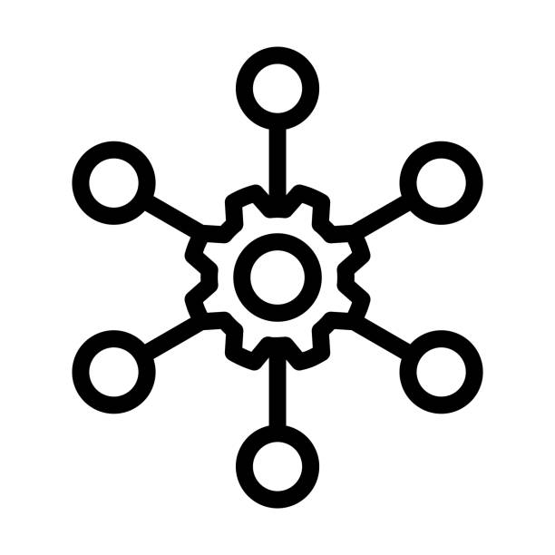

Gambaran umum semua fitur inti BioSignal Studio menyediakan.

Plot data dari berbagai saluran dalam grafik yang berbeda. Setiap stream memiliki warna yang berbeda untuk identifikasi yang mudah.
Rekam dan simpan data untuk referensi di masa depan. Ekspor data dalam format CSV untuk analisis lebih lanjut.
Untuk mengatur resolusi ADC, Chords secara otomatis mendeteksi berdasarkan ID vendor-nya.
Bekukan stream untuk menganalisis data. Lanjutkan stream ketika Anda siap untuk melanjutkan.